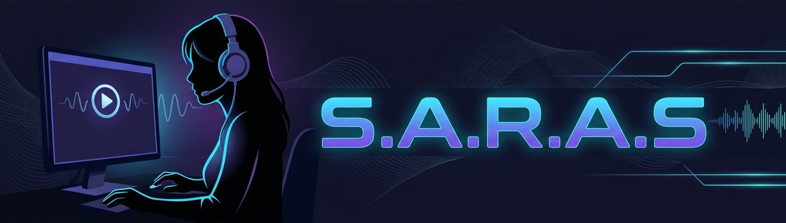

Project S.A.R.A.S Caller
OfflineGrupo de amigos
Combine o código uma vez com os amigos. Quem tem o código pode ver as lives do grupo. Cada transmissão pode ser pública (entrada automática) ou privada (com sua aprovação).
Ao vivo agora
Transmitir
Na live pública, qualquer participante com o código deste grupo pode entrar automaticamente. Na privada, você aprova cada solicitação.
Configurações avançadas
Configurações da câmera
Escolha a tela ou janela e marque “compartilhar áudio” para enviar o som. Resolução, FPS e bitrate podem ser mudados durante a transmissão.
Compartilhar só a janela do jogo evita que a prévia apareça repetida na captura da tela inteira.
Diagnóstico da transmissão
Diagnóstico por espectador
- Aguardando dados da transmissão…
Pedidos de entrada
Assistindo
Aguardando imagem da transmissão…